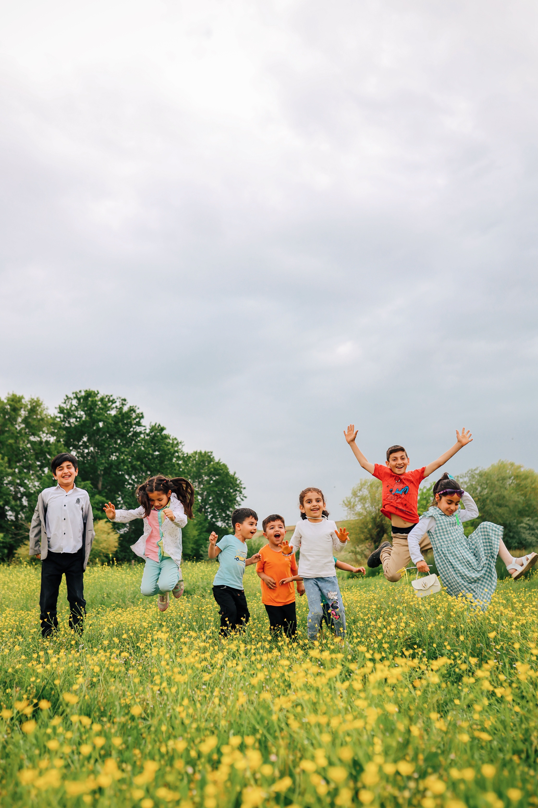

Social Support
Providing support and guidance to individuals and families who require assistance.
Building Stronger Communities Together

Welcome to A Re Ageng Social Services. Our organisation is committed to supporting individuals, families and communities through accessible social services and community-focused programmes.
We believe that stronger communities are created when people have access to support, information and opportunities.
Learn About Our ServicesA Re Ageng Social Services is a community-focused organisation that aims to provide support to people who need assistance and guidance.
Our proposed website will provide the community with an easy way to learn about our organisation, understand the services available and contact us for assistance.
Learn More About UsOur services are designed to support individuals, families and members of the community.
Providing support and guidance to individuals and families who require assistance.
Supporting community development and encouraging stronger relationships within local communities.
Providing useful information and guidance to help community members identify available support.
Community programmes can help people access support, develop skills and participate in activities that contribute to stronger communities.
Community organisations depend on people who are willing to support positive change.
Members of the community can get involved by participating in programmes, volunteering or contacting the organisation to learn more.
Get InvolvedIf you would like more information about our services or programmes, please contact us.
Contact Us